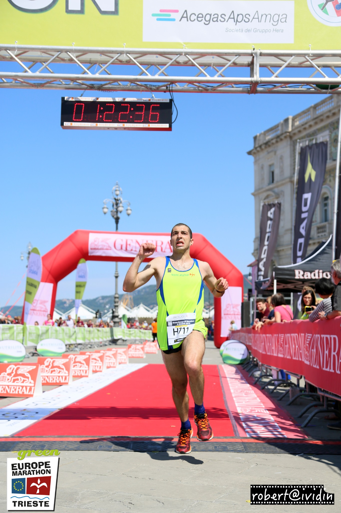
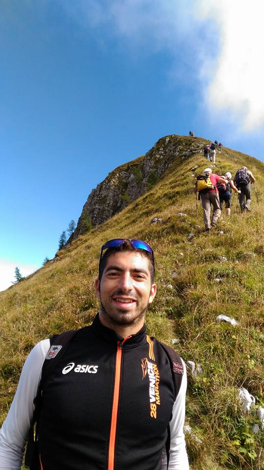
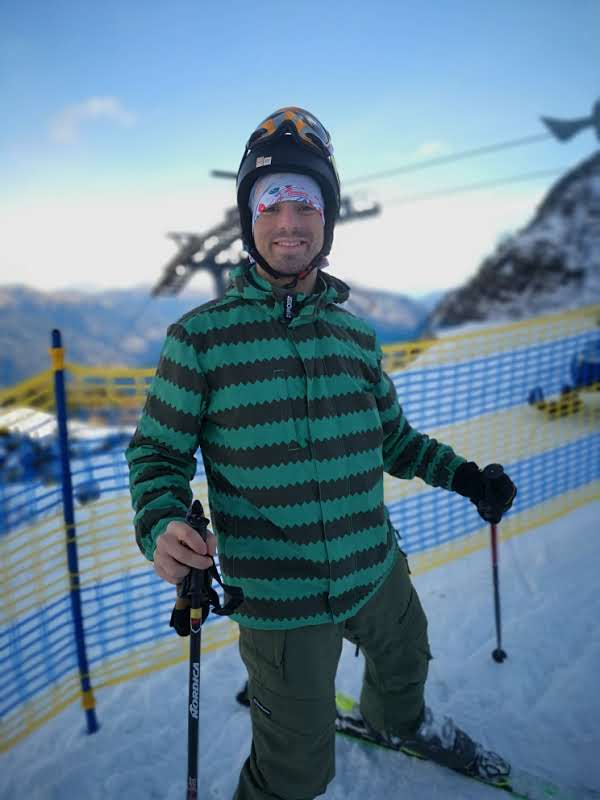
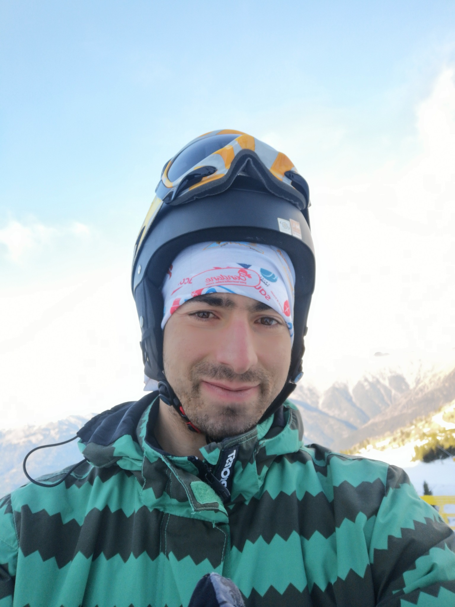
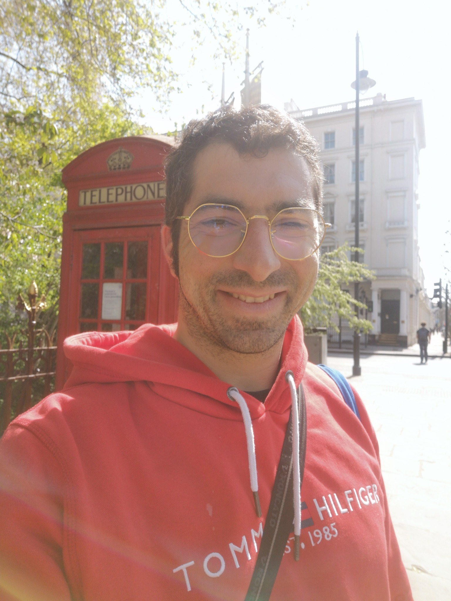
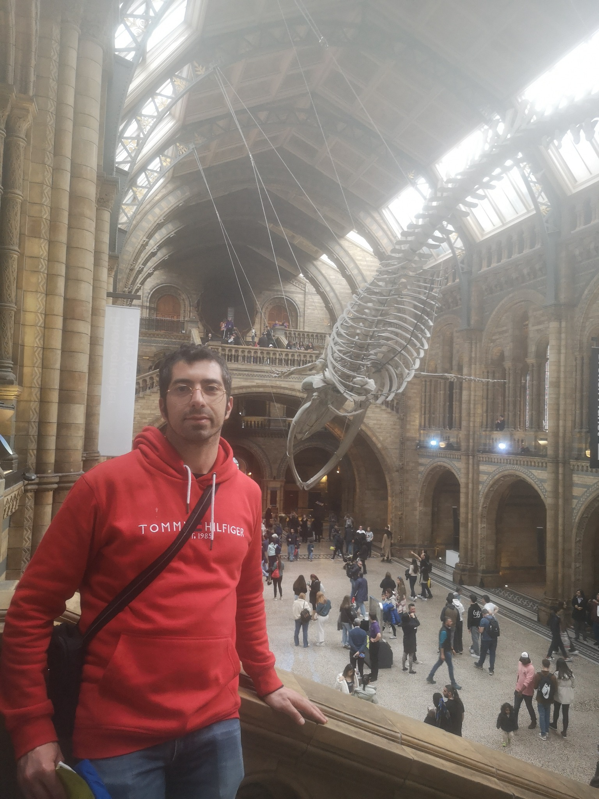
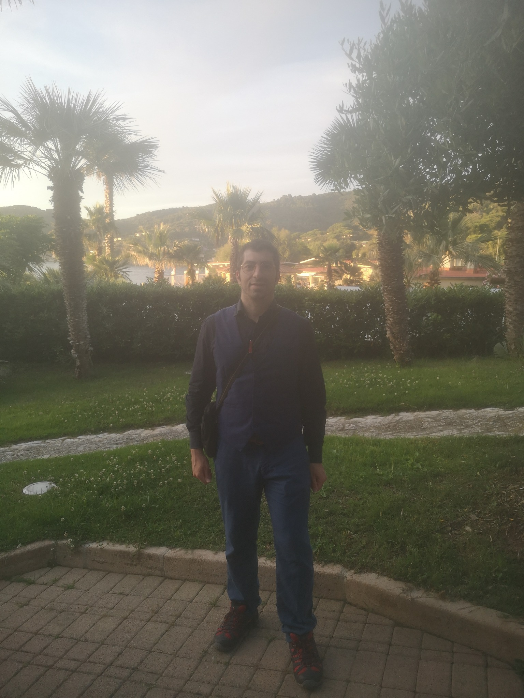
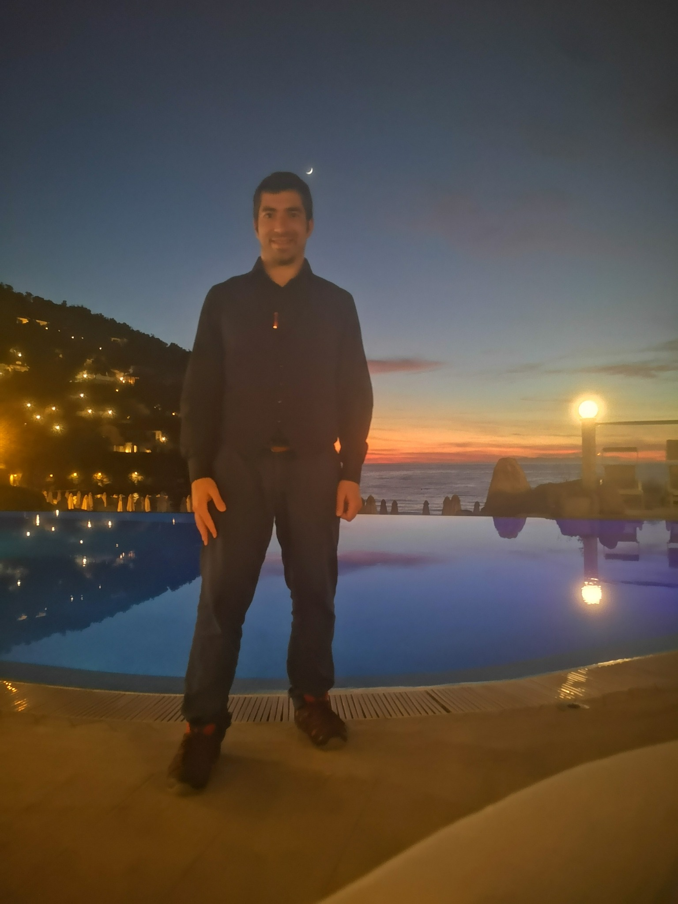
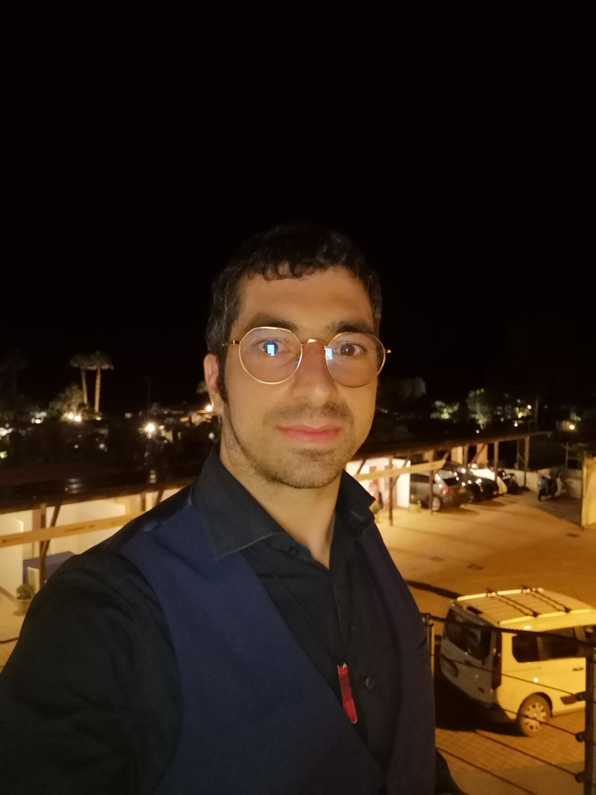
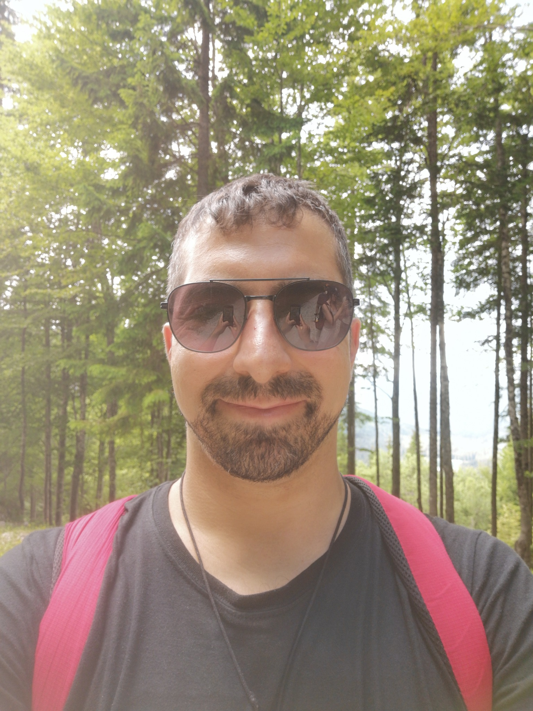

01Ocean modeling
Ocean models at scale
Working with NEMO and XIOS to understand model output, parallel execution, coupling, and reliable HPC workflows.
NEMO · XIOS · MPI
Computational physics / Oceanography / HPC
I’m Vittorio Sciortino. I work on the models, methods, and computing workflows that help turn complex Earth system data into useful science.
Technologist, Section of Oceanography at OGS Based in Trieste, Italy
01 / Selected work
I combine numerical reasoning with hands-on engineering, from model configuration and data analysis to parallel execution on large systems.
Working with NEMO and XIOS to understand model output, parallel execution, coupling, and reliable HPC workflows.
Developing an inverse box model with GO-SHIP hydrographic sections to estimate absolute ocean velocities.
Coauthor of a workshop presentation on UrgentShake, a federated HPC workflow for rapid earthquake modeling.
View workshop contributionMy background is in computational physics, including particle-in-cell simulation. I bring that numerical perspective to oceanography and scientific computing.
02 / Plasma & parallel computing
Before ocean modeling, my work in computational physics focused on kinetic simulations of plasma–surface interactions. DESPICCO models the plasma sheath near tokamak divertor walls using a two-dimensional, three-velocity particle-in-cell approach with Monte Carlo collisions.
My current CUDA Fortran work explores GPU acceleration for particle and field calculations. I work across MPI, parallel numerical methods, and HPC workflows to make demanding physical models more tractable.
03 / Through my lens
Ten photographs in chronological order, from 2016 to 2026.










04 / Get in touch
Interested in ocean modeling, plasma simulations, numerical methods, or HPC collaboration? Tell me what you’re working on.
Email Vittorio